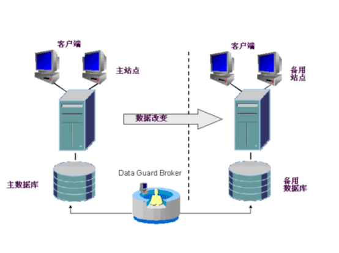

ADG数据灾备解决方案
什么是Oracle Data Guard？
Oracle Data Guard是管理、监控和自动化软件的基础架构，它创建、维护和监控一个或多个备用数据库，以保护企业数据结构不受故障、灾难、错误和崩溃的影响。同的心得。
Data Guard 使备用数据库保持为与生产数据库在事务上一致的副本。这些备用数据库可能位于距生产数据中心数千里的远程灾难恢复站点，或者可能位于同一城市、同一校园乃至同一建筑物内。当生产数据库由于计划中断或意外中断而变得不可用时，Data Guard可以将任意备用数据库切换到生产角色，从而使与中断相关的停机时间减到最小，并防止任何数据丢失。
作为Oracle数据库企业级的一个特性推出的Data Guard能够与其他的Oracle高可用性（HA）解决方案（如真正应用集群（RAC）和恢复管理器（RMAN））结合使用，以提供业内前所未有的高水平数据保护和数据可用性。
Oracle Data Guard结构概述

Oracle Data Guard包括一个生产数据库，也称为主数据库，以及一个或多个备用数据库，这些备用数据库是与主数据库在事务上一致的副本。Data Guard利用重做数据保持这种事务一致性。当主数据库中发生事务时，则生成重做数据并将其写入本地重做日志文件中。通过Data Guard，还将重做数据传输到备用站点上，并应用到备用数据库中，从而使备用数据库与主数据库保持同步。Data Guard允许管理员选择将重做数据同步还是异步地发送到备用站点上。
备用数据库的底层技术是Data Guard重做应用（物理备用数据库）和Data Guard SQL（逻辑备用数据库）。物理备用数据库在磁盘上拥有和主数据库逐块相同的数据库结构，并且使用Oracle介质恢复进行更新。逻辑备用数据库是一个独立数据库，它与主数据库包含相同的数据。它使用SQL语句进行更新，其相对优势是能够并行用于恢复以及诸如报表、查询等其他任务。
Data Guard简化了主数据库和选定的备用数据库之间的转换和故障切换，从而减少了由计划停机和计划外故障所导致的总停机时间。
主数据库和备用数据库以及它们的各种交互可以使用SQL*Plus来进行管理。为了获得更简便的可管理性，Data Guard还提供了一个分布式管理框架（成为Data Guard Broker），它不但自动化了Data Guard配置的创建、维护和监控，并对这些操作进行统一管理。管理员可以使用Oracle Enterprise Manager或Broker自己的专用命令行界面（DGMGRL）来利用Broker的管理功能。
Oracle Data Guard的好处
-
灾难恢复和高可用性 - Data Guard提供了一个高效和全面的灾难恢复和高可用性解决方案。易于管理的转换和故障切换功能允许主数据库和备用数据库之间的角色转换，从而使主数据库因计划的和计划外的中断所导致的停机时间减到最少。法
-
完善的数据保护 – 使用备用数据库，Data Guard可保证即使遇到不可预见的灾难也不会丢失数据。备用数据库提供了防止数据损坏和用户错误的安全保护。主数据库上的存储器级物理损坏不会传播到备用数据库上。同样，导致主数据库永久损坏的逻辑损坏或用户错误也能够得到解决。最后，在将重做数据应用到备用数据库时会对其进行验证。
-
有效利用系统资源 – 备用数据库表使用从主数据库接收到的重做数据进行更新，并且可用于诸如备份操作、报表、合计和查询等其他任务，从而减少执行这些任务所必须的主数据库工作负载，节省宝贵的CPU和I/O周期。使用逻辑备用数据库，用户可以再模式中不从主数据库进行更新表上执行数据处理操作。逻辑备用数据库可以在从主数据库中对表进行更新时保持打开，并可同时对表进行只读访问。最后，可以在维护的表上创建额外索引和物化视图，以获得更好的查询性能和适应特定的业务要求。
-
灵活的数据保护功能，从而在可用性与性能要求之间取得平衡 – Oracle Data Guard提供了最大保护、最高可用性和最高性能等模式，来帮助企业在系统性能要求和数据保护之间取得平衡。
-
自动间隔检测及其解决方案 – 如果主数据库与一个或更多备用数据库之间的连接丢失（例如，由于网络问题），则在主数据库上生成的重做数据将无法发送到那些备用数据库上。一旦重新建立连接，Data Guard就自动检测丢失的存档日志序列（或间隔），并将必要的存档日志自动传输到备用数据库中。备用数据库将重新与主数据库同步，而无需管理员的任何手动干预。
-
简单的集中式管理 - Data Guard Broker使一个Data Guard配置中的多个数据库间的管理和操作任务自动化。Broker还监控单个Data Guard配置内的所有系统。管理员可以使用Oracle Enterprise Manager或Broker自己专用的命令行界面（DGMGRL）来利用这个集成的管理框架。
Data Guard和RAC
Data Guard和真正应用集群（RAC）是互补的，应一起使用以实现最高可用性结构。
真正应用集群提供了高可用性：
- 能够快速和自动地从节点故障或一个实例崩溃中恢复过来
- 提供了增强的可伸缩性
Data Guard提供了灾难保护并防止数据丢失：
- 维护主数据库的几个事务一致的副本
- 防止灾难、数据损坏和用户错误
- 无需昂贵且负载的HW/SW镜像
Oracle Data Guard的优点
-
灾难恢复与高可用性——主数据库与备用数据库之间可轻松进行故障切换/转换
-
完整的数据保护——实现零数据丢失防止数据损坏
-
有效利用系统资源——备用数据库可用于报表操作、备份、查询
-
平衡数据可用性和性能——再恢复网络连接之后自动重新同步
-
集中的简单的管理——用于管理和监控
安装条件
运行Data Guard需要具备的条件：
-
在主库和从库的所有机器上必须安装同一个版本的Oracle企业版。
-
主库必须运行在归档模式下。
-
主库和从库的操作系统必须一样（允许版本不同），从库可以使用与主库不同的目录结构。
-
主从库硬件系统的体系结果必须相同。比如主库运行在64位的Sun Sparc系统上，如果从库是32位的Linux Inter系统则不允许。主从库硬件的配置可以不同，比如：CPU数量、内存大小、存储配置等。